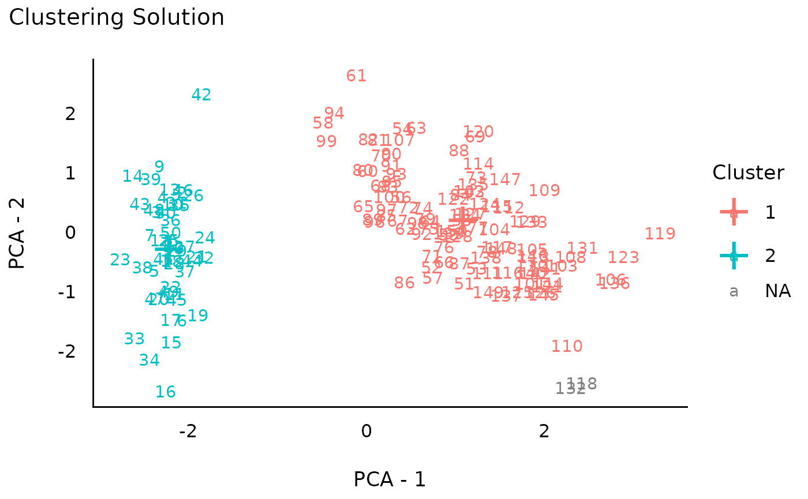

This vignette can be referred to by citing the package:
- Lüdecke, D., Ben-Shachar, M. S., Patil, I., & Makowski, D. (2020). Extracting, computing and exploring the parameters of statistical models using R. Journal of Open Source Software, 5(53), 2445. https://doi.org/10.21105/joss.02445
Note that in order to fully use all the methods demonstrated below, you will need to additionally install the packages below:
install.packages(c("NbClust", "mclust", "pvclust", "cluster", "fpc", "dbscan"))Introduction
Clustering traditionally refers to the identification of groups of observations (i.e., data rows). It differs from methods like PCA or Factor Analysis, which are usually applied on variables (i.e., columns). That said, it is possible to transpose your data (columns become rows) to apply clustering on variables.
There are many clustering algorithms (see this for an overview), but they can grouped in two categories: supervised and unsupervised techniques. In supervised techniques, you have to explicitly specify how many clusters you want to extract. Unsupervised techniques, on the other hand, will estimate this number as part of their algorithm. Note that there are no inherently superior and inferior clustering methods, each come with their sets of limitations and benefits.
As an example in the tutorial below, we will use the iris dataset, for which we know that there are 3 “real” clusters (the 3 Species of flowers). Let’s first start with visualizing the 3 “real” clusters on a 2D space of the variables created through PCA.
library(ggplot2)
library(parameters)
library(see)
set.seed(33) # Set random seed
# Select the first 4 numeric columns (drop the Species fator)
data <- iris[1:4]
head(data) # Print the 6 first rows
#> Sepal.Length Sepal.Width Petal.Length Petal.Width
#> 1 5.1 3.5 1.4 0.2
#> 2 4.9 3.0 1.4 0.2
#> 3 4.7 3.2 1.3 0.2
#> 4 4.6 3.1 1.5 0.2
#> 5 5.0 3.6 1.4 0.2
#> 6 5.4 3.9 1.7 0.4
# Run PCA
pca <- principal_components(data, n = 2)
pca_scores <- predict(pca, names = c("PCA_1", "PCA_2"))
pca_scores$True_Clusters <- iris$Species # Add real clusters
# Visualize
ggplot(pca_scores, aes(x = PCA_1, y = PCA_2, color = True_Clusters)) +
geom_point() +
theme_modern()
While the setosa species stands out quite clearly in this PCA space, the separation between the two other species appear less clear cut. Let’s see how data-driven clustering performs, and if we manage to retrieve these 3 clusters.
Supervised Clustering Methods
How Many Clusters to Extract?
There is no easy answer to that important question. The best way is to have strong expectations or hypotheses. If you don’t, well, researchers have came up with data-driven solutions to estimate the optimal number of clusters. The problem is that there are now a lot of these numerical methods, and that they don’t always agree…
Because there is no clearly better method, we have implemented in easystats a consensus-based algorithm that runs many of these methods, and returns the number of clusters that is the most agreed upon.
n <- n_clusters(data, package = c("easystats", "NbClust", "mclust"))
n
#> # Method Agreement Procedure:
#>
#> The choice of 2 clusters is supported by 15 (51.72%) methods out of 29 (Elbow, Silhouette, Gap_Maechler2012, Gap_Dudoit2002, Ch, DB, Duda, Pseudot2, Beale, Ratkowsky, PtBiserial, Mcclain, Dunn, SDindex, Mixture (VVV)).
plot(n)
As we can see, most methods suggest the existence of 2 clusters, followed by a 3-clusters solution. It seems like the data does not clearly discriminate between the 3 species of flowers. This discrepancy between what is, and what we can recover from real-world data, is a fundamental issue in data science.
K-Means
We won’t go too much into details about the mathematics and intuition behind these clustering methods, as good resources are available all over the internet. Instead, we’ll focus on how to apply them.
K-means is one of the most basic clustering algorithm, available in
base R through the kmeans() function. However, we provide
in easystats a unified function to run different clustering algorithms:
cluster_analysis().
(Note that k-means is a non-deterministic algorithm; running it
multiple times will result in different results!)
Now that we know how many clusters we want to extract (let’s say that we have a strong hypothesis on 3, which is partially supported by the consensus method for estimating the optimal number of clusters).
rez_kmeans <- cluster_analysis(data, n = 3, method = "kmeans")
rez_kmeans # Show results
#> # Clustering Solution
#>
#> The 3 clusters accounted for 76.70% of the total variance of the original data.
#>
#> Cluster | n_Obs | Sum_Squares | Sepal.Length | Sepal.Width | Petal.Length | Petal.Width
#> ---------------------------------------------------------------------------------------
#> 1 | 53 | 44.09 | -0.05 | -0.88 | 0.35 | 0.28
#> 2 | 47 | 47.45 | 1.13 | 0.09 | 0.99 | 1.01
#> 3 | 50 | 47.35 | -1.01 | 0.85 | -1.30 | -1.25
#>
#> # Indices of model performance
#>
#> Sum_Squares_Total | Sum_Squares_Between | Sum_Squares_Within | R2
#> --------------------------------------------------------------------
#> 596.000 | 457.112 | 138.888 | 0.767
#>
#> # You can access the predicted clusters via `predict()`.Note that we can also visualize the centers (i.e., the “average” of each variable for each cluster):
One can extract the cluster assignments to use it as a new variable
by using predict().
predict(rez_kmeans) # Get clusters
#> [1] 3 3 3 3 3 3 3 3 3 3 3 3 3 3 3 3 3 3 3 3 3 3 3 3 3 3 3 3 3 3 3 3 3 3 3 3 3
#> [38] 3 3 3 3 3 3 3 3 3 3 3 3 3 2 2 2 1 1 1 2 1 1 1 1 1 1 1 1 2 1 1 1 1 2 1 1 1
#> [75] 1 2 2 2 1 1 1 1 1 1 1 2 2 1 1 1 1 1 1 1 1 1 1 1 1 1 2 1 2 2 2 2 1 2 2 2 2
#> [112] 2 2 1 1 2 2 2 2 1 2 1 2 1 2 2 1 2 2 2 2 2 2 1 1 2 2 2 1 2 2 2 1 2 2 2 1 2
#> [149] 2 1Hierarchical Clustering
Hierarchical clustering is also a common clustering algorithm,
available in base R through the hclust() function. This
method is a bit different in the sense that is does not straight up
return clusters. Instead, in creates a hierarchical structure (a
dendrogram), a tree from which we can cut branches to
get a given number of clusters. Note that this “tree” cutting can be
done in an unsupervised fashion too using bootstrapping (which we will
apply in the next section).
rez_hclust <- cluster_analysis(data, n = 3, method = "hclust")
rez_hclust # Show results
#> # Clustering Solution
#>
#> The 3 clusters accounted for 74.35% of the total variance of the original data.
#>
#> Cluster | n_Obs | Sum_Squares | Sepal.Length | Sepal.Width | Petal.Length | Petal.Width
#> ---------------------------------------------------------------------------------------
#> 1 | 49 | 40.12 | -1.00 | 0.90 | -1.30 | -1.25
#> 2 | 24 | 18.65 | -0.40 | -1.36 | 0.06 | -0.04
#> 3 | 77 | 94.08 | 0.76 | -0.15 | 0.81 | 0.81
#>
#> # Indices of model performance
#>
#> Sum_Squares_Total | Sum_Squares_Between | Sum_Squares_Within | R2
#> --------------------------------------------------------------------
#> 596.000 | 443.143 | 152.857 | 0.744
#>
#> # You can access the predicted clusters via `predict()`.
# Visualize
plot(rez_hclust) + theme_modern() # Visualize
Hierarchical K-Means
Hierarchical K-Means, as its name suggest, is essentially a combination of K-Means and hierarchical clustering that aims at improving the stability and robustness of the results.
rez_hkmeans <- cluster_analysis(data, n = 3, method = "hkmeans")
rez_hkmeans # Show results
#> # Clustering Solution
#>
#> The 3 clusters accounted for 76.70% of the total variance of the original data.
#>
#> Cluster | n_Obs | Sum_Squares | Sepal.Length | Sepal.Width | Petal.Length | Petal.Width
#> ---------------------------------------------------------------------------------------
#> 1 | 50 | 47.35 | -1.01 | 0.85 | -1.30 | -1.25
#> 2 | 53 | 44.09 | -0.05 | -0.88 | 0.35 | 0.28
#> 3 | 47 | 47.45 | 1.13 | 0.09 | 0.99 | 1.01
#>
#> # Indices of model performance
#>
#> Sum_Squares_Total | Sum_Squares_Between | Sum_Squares_Within | R2
#> --------------------------------------------------------------------
#> 596.000 | 457.112 | 138.888 | 0.767
#>
#> # You can access the predicted clusters via `predict()`.
# Visualize
plot(rez_hkmeans) + theme_modern() # Visualize
K-Medoids (PAM)
Clustering around “medoids”, instead of “centroid”, is considered to
be a more robust version of K-means. See cluster::pam() for
more information.
rez_pam <- cluster_analysis(data, n = 3, method = "pam")
rez_pam # Show results
#> # Clustering Solution
#>
#> The 3 clusters accounted for 76.46% of the total variance of the original data.
#>
#> Cluster | n_Obs | Sum_Squares | Sepal.Length | Sepal.Width | Petal.Length | Petal.Width
#> ---------------------------------------------------------------------------------------
#> 1 | 50 | 47.35 | -1.01 | 0.85 | -1.30 | -1.25
#> 2 | 45 | 45.26 | 1.17 | 0.06 | 1.02 | 1.05
#> 3 | 55 | 47.67 | -0.04 | -0.82 | 0.35 | 0.28
#>
#> # Indices of model performance
#>
#> Sum_Squares_Total | Sum_Squares_Between | Sum_Squares_Within | R2
#> --------------------------------------------------------------------
#> 596.000 | 455.714 | 140.286 | 0.765
#>
#> # You can access the predicted clusters via `predict()`.
# Visualize
plot(rez_pam) + theme_modern() # Visualize
Unsupervised Clustering Methods
Unsupervised clustering methods estimate the optimal number of
clusters themselves (hence, n = NULL as we don’t
pre-specify a given number of clusters). Note that unsupervised methods
can sometimes identify observations that do not fit under any clusters
(i.e., “outliers”). They will be classified as
belonging to the cluster “0” (which is not a real cluster, but rather
groups all the outliers).
Bootstrapped Hierarchical Clustering
This method computes p-values for each cluster of the hierarchical cluster structure, and returns the significant clusters. This method can return a larger number of smaller clusters and, because it’s based on bootstrapping, is quite slow.
rez_hclust2 <- cluster_analysis(data,
n = NULL,
method = "hclust",
iterations = 500,
ci = 0.90
)
rez_hclust2 # Show results
#> # Clustering Solution
#>
#> The 25 clusters accounted for 48.37% of the total variance of the original data.
#>
#> Cluster | n_Obs | Sum_Squares | Sepal.Length | Sepal.Width | Petal.Length | Petal.Width
#> ---------------------------------------------------------------------------------------
#> 0 | 89 | 304.31 | 0.11 | -0.19 | 0.12 | 0.12
#> 1 | 2 | 7.29e-03 | -0.96 | 0.79 | -1.28 | -1.31
#> 10 | 2 | 0.02 | -0.23 | -0.13 | 0.22 | 0.07
#> 11 | 2 | 0.02 | 0.49 | 0.79 | 0.99 | 1.51
#> 12 | 2 | 0.03 | -0.41 | -0.13 | 0.42 | 0.39
#> 13 | 2 | 0.03 | -1.02 | 0.44 | -1.39 | -1.31
#> 14 | 2 | 0.03 | -1.08 | -1.62 | -0.26 | -0.26
#> 15 | 3 | 0.07 | -1.78 | -0.21 | -1.41 | -1.35
#> 16 | 3 | 0.09 | -0.13 | -0.74 | 0.72 | 0.96
#> 17 | 3 | 0.12 | -0.50 | 0.86 | -1.28 | -1.22
#> 18 | 3 | 0.09 | -1.34 | 0.79 | -1.20 | -1.27
#> 19 | 2 | 0.08 | 2.18 | -0.13 | 1.47 | 1.31
#> 2 | 2 | 7.29e-03 | -0.60 | 1.47 | -1.28 | -1.31
#> 20 | 2 | 0.10 | -0.60 | 2.51 | -1.31 | -1.38
#> 21 | 2 | 0.15 | 1.64 | 0.10 | 1.21 | 0.66
#> 22 | 3 | 0.22 | 0.39 | -1.89 | 0.50 | 0.31
#> 23 | 7 | 1.42 | 0.29 | 0.23 | 0.57 | 0.66
#> 24 | 3 | 0.80 | 2.12 | 1.55 | 1.50 | 1.36
#> 3 | 2 | 8.61e-03 | 0.67 | -0.59 | 1.04 | 1.25
#> 4 | 2 | 0.01 | -0.41 | -1.51 | -4.53e-03 | -0.20
#> 5 | 2 | 0.01 | -0.90 | 1.70 | -1.25 | -1.25
#> 6 | 2 | 0.01 | 1.22 | 0.33 | 1.16 | 1.44
#> 7 | 2 | 0.02 | -1.08 | 1.25 | -1.34 | -1.38
#> 8 | 3 | 0.02 | -0.94 | 1.02 | -1.35 | -1.22
#> 9 | 3 | 0.02 | -1.18 | 0.10 | -1.26 | -1.35
#>
#> # Indices of model performance
#>
#> Sum_Squares_Total | Sum_Squares_Between | Sum_Squares_Within | R2
#> --------------------------------------------------------------------
#> 596.000 | 288.295 | 3.390 | 0.484
#>
#> # You can access the predicted clusters via `predict()`.
plot(rez_hclust2) + theme_modern() # Visualize
DBSCAN
Although the DBSCAN method is quite powerful to identify clusters, it
is highly dependent on its parameters, namely, eps and the
min_size. Regarding the latter, the minimum size of any
cluster is set by default to 0.1 (i.e., 10% of rows), which
is appropriate to avoid having too small clusters.
The “optimal” eps value can be estimated using the
n_clusters_dbscan()
function:
eps <- n_clusters_dbscan(data, min_size = 0.1)
eps
#> The DBSCAN method, based on the total clusters sum of squares, suggests that the optimal eps = 2.11193281281293 (with min. cluster size set to 15), which corresponds to 1 clusters.
plot(eps)
It seems like the numeric method to find the elbow of the curve
doesn’t work well, and returns a value that is too high. Based on visual
assessment, the elbow seems to be located around
eps = 1.45.
rez_dbscan <- cluster_analysis(data, method = "dbscan", dbscan_eps = 1.45)
rez_dbscan # Show results
#> # Clustering Solution
#>
#> The 3 clusters accounted for 61.14% of the total variance of the original data.
#>
#> Cluster | n_Obs | Sum_Squares | Sepal.Length | Sepal.Width | Petal.Length | Petal.Width
#> ---------------------------------------------------------------------------------------
#> 0 | 5 | 47.84 | 1.03 | 0.74 | 0.45 | 0.32
#> 1 | 48 | 34.54 | -1.02 | 0.86 | -1.30 | -1.26
#> 2 | 97 | 149.21 | 0.45 | -0.46 | 0.62 | 0.61
#>
#> # Indices of model performance
#>
#> Sum_Squares_Total | Sum_Squares_Between | Sum_Squares_Within | R2
#> --------------------------------------------------------------------
#> 596.000 | 364.406 | 183.751 | 0.611
#>
#> # You can access the predicted clusters via `predict()`.
plot(rez_dbscan) + theme_modern() # Visualize
Hierarchical K-Means
Hierarchical DBSCAN is a variant that does not require the critical EPS argument. It computes the hierarchy of all DBSCAN solutions, and then finds the optimal cuts in the hierarchy using a stability-based extraction method.
rez_hdbscan <- cluster_analysis(data, method = "hdbscan")
rez_hdbscan # Show results
#> # Clustering Solution
#>
#> The 3 clusters accounted for 66.08% of the total variance of the original data.
#>
#> Cluster | n_Obs | Sum_Squares | Sepal.Length | Sepal.Width | Petal.Length | Petal.Width
#> ---------------------------------------------------------------------------------------
#> 0 | 2 | 0.08 | 2.36 | 1.70 | 1.58 | 1.18
#> 1 | 98 | 154.76 | 0.47 | -0.47 | 0.63 | 0.61
#> 2 | 50 | 47.35 | -1.01 | 0.85 | -1.30 | -1.25
#>
#> # Indices of model performance
#>
#> Sum_Squares_Total | Sum_Squares_Between | Sum_Squares_Within | R2
#> --------------------------------------------------------------------
#> 596.000 | 393.813 | 202.108 | 0.661
#>
#> # You can access the predicted clusters via `predict()`.
# Visualize
plot(rez_hdbscan) + theme_modern() # Visualize
K-Medoids with estimation of number of clusters (pamk)
This is K-Medoids with an integrated estimation of the number of
clusters. See fpc::pamk for more details.
rez_pamk <- cluster_analysis(data, method = "pamk")
rez_pamk # Show results
#> # Clustering Solution
#>
#> The 2 clusters accounted for 62.94% of the total variance of the original data.
#>
#> Cluster | n_Obs | Sum_Squares | Sepal.Length | Sepal.Width | Petal.Length | Petal.Width
#> ---------------------------------------------------------------------------------------
#> 1 | 50 | 47.35 | -1.01 | 0.85 | -1.30 | -1.25
#> 2 | 100 | 173.53 | 0.51 | -0.43 | 0.65 | 0.63
#>
#> # Indices of model performance
#>
#> Sum_Squares_Total | Sum_Squares_Between | Sum_Squares_Within | R2
#> --------------------------------------------------------------------
#> 596.000 | 375.121 | 220.879 | 0.629
#>
#> # You can access the predicted clusters via `predict()`.
# Visualize
plot(rez_pamk) + theme_modern() # Visualize
Mixture
Model-based clustering based on finite Gaussian mixture models. Models are estimated by EM algorithm initialized by hierarchical model-based agglomerative clustering. The optimal model is then selected according to BIC.
library(mclust)
rez_mixture <- cluster_analysis(data, method = "mixture")
rez_mixture # Show results
#> # Clustering Solution
#>
#> The 2 clusters accounted for 62.94% of the total variance of the original data.
#>
#> Cluster | n_Obs | Sum_Squares | Sepal.Length | Sepal.Width | Petal.Length | Petal.Width
#> ---------------------------------------------------------------------------------------
#> 1 | 50 | 47.35 | -1.01 | 0.85 | -1.30 | -1.25
#> 2 | 100 | 173.53 | 0.51 | -0.43 | 0.65 | 0.63
#>
#> # Indices of model performance
#>
#> Sum_Squares_Total | Sum_Squares_Between | Sum_Squares_Within | R2
#> --------------------------------------------------------------------
#> 596.000 | 375.121 | 220.879 | 0.629
#>
#> # You can access the predicted clusters via `predict()`.
# Visualize
plot(rez_mixture) + theme_modern() # Visualize
Metaclustering
One of the core “issue” of statistical clustering is that, in many cases, different methods will give different results. The metaclustering approach proposed by easystats (that finds echoes in consensus clustering; see Monti et al., 2003) consists of treating the unique clustering solutions as a ensemble, from which we can derive a probability matrix. This matrix contains, for each pair of observations, the probability of being in the same cluster. For instance, if the 6th and the 9th row of a dataframe has been assigned to a similar cluster by 5 our of 10 clustering methods, then its probability of being grouped together is 0.5.
Metaclustering is based on the hypothesis that, as each clustering algorithm embodies a different prism by which it sees the data, running an infinite amount of algorithms would result in the emergence of the “true” clusters. As the number of algorithms and parameters is finite, the probabilistic perspective is a useful proxy. This method is interesting where there is no obvious reasons to prefer one over another clustering method, as well as to investigate how robust some clusters are under different algorithms.
list_of_results <- list(
rez_kmeans, rez_hclust, rez_hkmeans, rez_pam,
rez_hclust2, rez_dbscan, rez_hdbscan, rez_mixture
)
probability_matrix <- cluster_meta(list_of_results)
# Plot the matrix as a reordered heatmap
heatmap(probability_matrix,
scale = "none",
col = grDevices::hcl.colors(256, palette = "inferno")
)
The dendrogram (which is a hierarchical clustering of the clustering solution, hence the name of metaclustering), as well as the heatmap (in which the darker squares represent a higher probability of belonging to the same cluster) shows that there is one metacluster consisting of the 1-50 first rows (bottom left), and then the rest of the observations are closer to one another. However, two subclusters are still visible, corresponding to the “true” species.
The metaclustering approach confirms our initial hypothesis, the setosa species stands out quite clearly, and the separation between the two other species is less clear cut.